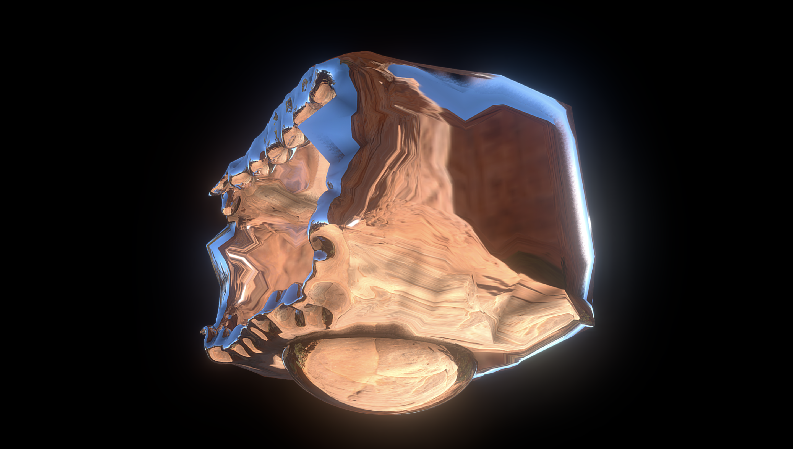
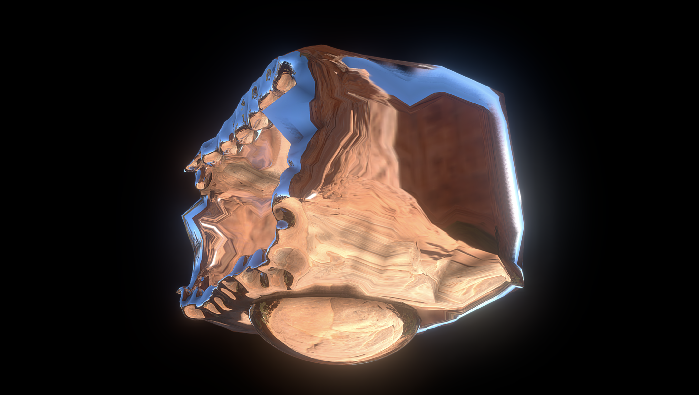

My work explores the relationship between ancient Chinese text and modern 3D model tools. The ancient Chinese text from “Classic of Mountains and Seas” explored various mythologies of geography and beasts from China. It records up to 500 mountains and 75 beasts. Studies found that the book matches the current geography from nowadays. South mountain series is one of the series of the book, the first chapter “Magpie Mountain” introduce an entry of the text. The Magpie Mountain shows the audience what the ancient Chinese text describes so that the audience can dive into them and find out its beauty of it. Audiences will enter Magpie mountain with a path guiding them and they will see the landscape through the path.
Ever since I was a kid I have been fascinated by Chinese mythologies and as I grew up, I learned that there are many tools that allow us to make the impossible come true. I chose Blender as my main tool for bringing the Magpie mountain into life and with the ancient Chinese music to bring the audience in. The magic scene of ancient and modern conflict with each other to create a whole new world for audiences to experience.


 
